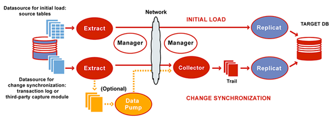
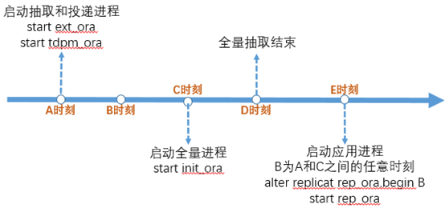

背景描述
业务的发展，以及数据的爆发式增长，公司会面临一轮数据库的垂直拆分和水平拆分。拆分后对代码的侵入性较大，后续的不断扩容让 DBA 的管理成本上升。所以急需既支持关系型数据库 RDBMS 和非关系型数据库 NoSQL 分布式的存储计算引擎。
TiDB 分布式数据库结合了传统的 RDBMS 和 NoSQL 的最佳特性。首先，高度兼容 MySQL 协议，大多数情况代码可以直接迁移到 TiDB 分布式数据库，已经分库分表的实例可以在 TiDB 中进行聚合；同时，TiDB 分布式数据库支持水平弹性扩展，通过简单地增加新节点即可实现 TiDB 分布式数据库的水平扩展，按需扩展计算节点或存储节点，轻松应对高并发、海量数据场景。
所以基于 TiDB 分布式数据库的上述特性，本文将介绍通过 OGG 将 Oracle 的数据同步到 TiDB 分布式数据库的相关原理及操作步骤。
5.2.1 环境说明
1. 软件版本
Oracle GoldenGate 12.3.0.1.4 for Oracle on Linux x86-64
Oracle GoldenGate 12.3.0.1.5 for MySQL-compatible DBs on Linux x86-64
本文档以 Oracle 11G 数据库为例，对 Oracle 数据库通过 OGG 同步至 TiDB 分布式数据库中进行说明。
Oracle 端字符集为 ZHS16GBK。
2. 同步过程说明
2.1. 表结构转换
由于 Oracle 中表数据类型与 TiDB 分布式数据库中数据类型不一致，需要预先进行表结构的转换（可以使用 Navicat 工具）。
2.2. 初始化同步
初始化数据通过 OGG initial load 进程将 Oracle 数据导入到 TiDB 分布式数据库中，如此时 Oracle 数据库中仍然有写入操作，则 initial load 开始时间之后的数据变化无法同步，此时需要进行增量的数据同步，且在同步多张表时，每个表同步的时间并不一致。如采用停机同步（同步期间 Oracle 中表数据不再变化），仅需要进行初始化同步操作。
2.3. 增量数据同步
在初始化同步的基础上进行后续变化的数据同步，需要在初始化同步之前，先开启日志抽取。由于异构平台，无法基于统一时间点完成数据初始导入操作，所以在完成初始化导入操作之后需要完整应用开始 initial load 同步之后的所有 log，此时会存在重复执行的问题，OGG 中通过 handlecolisions 参数处理冲突的场景，保证最终数据的一致性（根据主键或唯一键进行重复的操作可以保证最终数据一致，在缺少主键的场景可能会导致数据重复）。
3. 源端 Oracle 要求
- 归档模式
- Force logging
- ENABLE_GOLDENGATE_REPLICATION 参数为 true (11.2.0.4)
- 最小补全日志（根据同步数据范围选择）
- 表级别
- Schema 级别
- 数据库级
- 用户权限
- 建议 DBA 角色。
4. 目标端 TiDB 分布式数据库要求
- set tidb_constraint_check_in_place = 1;
该参数将 TiDB 分布式数据库中乐观锁模式下的主键冲突检查由 commit 时检查提升为 insert 时检查，在遇到主键冲突时可配置为忽略冲突，否则在遇到主键冲突时无法忽略，复制进程会 abend。仅需在 OGG 复制进程 session 级别设置，通过配置在复制进程参数中实现，无需全局修改。
- lower-case-table-names = 1
OGG 复制进程需要该参数设置为 1，tidb 中修改此参数并未产生实际效果变化，仅为实现兼容。
5. OGG 同步要求
DDL 建表语句需提前转换，并在目标端执行。
如下表的示例：
- 源端 Oracle
create table account (
account_number number(10,0),
account_balance decimal(38,2),
account_trans_ts timestamp(6),
account_trans_type varchar2(30),
primary key (account_number)
using index
);
- 目标端 TiDB 分布式数据库
create table account (
account_number int,
account_balance decimal(38,2),
account_trans_ts timestamp,
account_trans_type varchar(30),
primary key (account_number));
5.2.2 环境准备
1. OGG 安装 - Oracle 端
解压安装包
$unzip V975837-01.zip
$ ls -l
total 1201820
drwxr-xr-x 3 oracle oinstall 4096 Apr 16 2018 fbo_ggs_Linux_x64_shiphome
-rw-r--r-- 1 oracle oinstall 1396 May 10 2018 OGG-12.3.0.1.4-README.txt
-rw-r--r-- 1 oracle oinstall 293566 May 10 2018 OGG_WinUnix_Rel_Notes_12.3.0.1.4.pdf
采用静默安装方式
(1) 编辑应答文件
$vi ./fbo_ggs_Linux_x64_shiphome/Disk1/response/oggcore.rsp
####################################################################
## Copyright(c) Oracle Corporation 2017. All rights reserved. ##
## ##
## Specify values for the variables listed below to customize ##
## your installation. ##
## ##
## Each variable is associated with a comment. The comment ##
## can help to populate the variables with the appropriate ##
## values. ##
## ##
## IMPORTANT NOTE: This file should be secured to have read ##
## permission only by the oracle user or an administrator who ##
## own this installation to protect any sensitive input values. ##
## ##
####################################################################
#-------------------------------------------------------------------------------
# Do not change the following system generated value.
#-------------------------------------------------------------------------------
oracle.install.responseFileVersion=/oracle/install/rspfmt_ogginstall_response_schema_v12_1_2
################################################################################
## ##
## Oracle GoldenGate installation option and details ##
## ##
################################################################################
#-------------------------------------------------------------------------------
# Specify the installation option.
# Specify ORA12c for installing Oracle GoldenGate for Oracle Database 12c and
# ORA11g for installing Oracle GoldenGate for Oracle Database 11g
#-------------------------------------------------------------------------------
INSTALL_OPTION=ORA11g
##此处为 Oracle 数据库版本，本文档使用 11.2.0.4，此处填写 ORA11G，如果是 12c 版本则填写 ORA12c
#-------------------------------------------------------------------------------
# Specify a location to install Oracle GoldenGate
#-------------------------------------------------------------------------------
SOFTWARE_LOCATION=/home/oracle/ogg12.3
##此处为安装路径
#-------------------------------------------------------------------------------
# Specify true to start the manager after installation.
#-------------------------------------------------------------------------------
START_MANAGER=false
##安装完成不启动 mgr 进程，设为 false
#-------------------------------------------------------------------------------
# Specify a free port within the valid range for the manager process.
# Required only if START_MANAGER is true.
#-------------------------------------------------------------------------------
MANAGER_PORT=
#-------------------------------------------------------------------------------
# Specify the location of the Oracle Database.
# Required only if START_MANAGER is true.
#-------------------------------------------------------------------------------
DATABASE_LOCATION=
################################################################################
## ##
## Specify details to Create inventory for Oracle installs ##
## Required only for the first Oracle product install on a system. ##
## ##
################################################################################
#-------------------------------------------------------------------------------
# Specify the location which holds the install inventory files.
# This is an optional parameter if installing on
# Windows based Operating System.
#-------------------------------------------------------------------------------
INVENTORY_LOCATION=
#-------------------------------------------------------------------------------
# Unix group to be set for the inventory directory.
# This parameter is not applicable if installing on
# Windows based Operating System.
#-------------------------------------------------------------------------------
UNIX_GROUP_NAME=
(2) 安装
执行 fbo_ggs_Linux_x64_shiphome/Disk1/runInstaller
$./fbo_ggs_Linux_x64_shiphome/Disk1/runInstaller -silent -responseFile /home/oracle/oggsoft/fbo_ggs_Linux_x64_shiphome/Disk1/response/oggcore.rsp
#此处 response 文件不支持相对路径
安装完成后日志中会显示如下 successful
The installation of Oracle GoldenGate Core was successful
在指定安装目录中会生成 OGG 相关文件
$ ls -l
total 225044
-rwxr-xr-x 1 oracle oinstall 426 Oct 15 2010 bcpfmt.tpl
-rwxr-xr-x 1 oracle oinstall 1725 Oct 15 2010 bcrypt.txt
-rwxrwxr-x 1 oracle oinstall 1612776 Apr 15 2018 cachefiledump
drwxr-xr-x 4 oracle oinstall 4096 Jul 28 14:45 cfgtoollogs
-rwxrwxr-x 1 oracle oinstall 3563576 Apr 15 2018 checkprm
-rw-rw-r-- 1 oracle oinstall 1021 Apr 15 2018 chkpt_ora_create.sql
-rwxrwxr-x 1 oracle oinstall 3379568 Apr 15 2018 convchk
-rwxrwxr-x 1 oracle oinstall 4716080 Apr 15 2018 convprm
drwxr-xr-x 2 oracle oinstall 4096 Jul 28 14:45 crypto
-rwxr-xr-x 1 oracle oinstall 159 Oct 15 2010 db2cntl.tpl
-rwxrwxr-x 1 oracle oinstall 9696 Apr 15 2018 db_upgrade
-rw-rw-r-- 1 oracle oinstall 455 Apr 15 2018 ddl_cleartrace.sql
-rw-rw-r-- 1 oracle oinstall 8414 Apr 15 2018 ddl_create.sql
-rw-rw-r-- 1 oracle oinstall 3176 Apr 15 2018 ddl_ddl2file.sql
-rw-rw-r-- 1 oracle oinstall 90 Apr 15 2018 ddl_disable.sql
-rw-rw-r-- 1 oracle oinstall 88 Apr 15 2018 ddl_enable.sql
-rw-rw-r-- 1 oracle oinstall 2036 Apr 15 2018 ddl_filter.sql
-rw-rw-r-- 1 oracle oinstall 12220 Apr 15 2018 ddl_ora10.sql
-rw-rw-r-- 1 oracle oinstall 1725 Apr 15 2018 ddl_ora10upCommon.sql
-rw-rw-r-- 1 oracle oinstall 13539 Apr 15 2018 ddl_ora11.sql
-rw-rw-r-- 1 oracle oinstall 12564 Apr 15 2018 ddl_ora9.sql
-rw-rw-r-- 1 oracle oinstall 216 Apr 15 2018 ddl_pin.sql
-rw-rw-r-- 1 oracle oinstall 3184 Apr 15 2018 ddl_remove.sql
-rw-rw-r-- 1 oracle oinstall 1 Apr 15 2018 ddl_session1.sql
-rw-rw-r-- 1 oracle oinstall 629 Apr 15 2018 ddl_session.sql
-rw-rw-r-- 1 oracle oinstall 287877 Apr 15 2018 ddl_setup.sql
-rw-rw-r-- 1 oracle oinstall 8401 Apr 15 2018 ddl_status.sql
-rw-rw-r-- 1 oracle oinstall 2122 Apr 15 2018 ddl_staymetadata_off.sql
-rw-rw-r-- 1 oracle oinstall 2118 Apr 15 2018 ddl_staymetadata_on.sql
-rw-rw-r-- 1 oracle oinstall 2186 Apr 15 2018 ddl_tracelevel.sql
-rw-rw-r-- 1 oracle oinstall 2133 Apr 15 2018 ddl_trace_off.sql
-rw-rw-r-- 1 oracle oinstall 2383 Apr 15 2018 ddl_trace_on.sql
-rwxrwxr-x 1 oracle oinstall 5037440 Apr 15 2018 defgen
drwxr-xr-x 2 oracle oinstall 4096 Jul 28 14:45 deinstall
-rw-rw-r-- 1 oracle oinstall 882 Apr 15 2018 demo_more_ora_create.sql
-rw-rw-r-- 1 oracle oinstall 649 Apr 15 2018 demo_more_ora_insert.sql
-rw-rw-r-- 1 oracle oinstall 583 Apr 15 2018 demo_ora_create.sql
-rw-rw-r-- 1 oracle oinstall 504 Apr 15 2018 demo_ora_insert.sql
-rw-rw-r-- 1 oracle oinstall 3597 Apr 15 2018 demo_ora_lob_create.sql
-rw-rw-r-- 1 oracle oinstall 1943 Apr 15 2018 demo_ora_misc.sql
-rw-rw-r-- 1 oracle oinstall 1056 Apr 15 2018 demo_ora_pk_befores_create.sql
-rw-rw-r-- 1 oracle oinstall 1013 Apr 15 2018 demo_ora_pk_befores_insert.sql
-rw-rw-r-- 1 oracle oinstall 2305 Apr 15 2018 demo_ora_pk_befores_updates.sql
drwxr-xr-x 3 oracle oinstall 4096 Jul 28 14:45 diagnostics
drwxr-xr-x 3 oracle oinstall 4096 Jul 28 14:45 diretc
drwxr-xr-x 2 oracle oinstall 4096 Jul 28 14:45 dirout
drwxr-xr-x 4 oracle oinstall 4096 Jul 28 14:45 dirsca
-rwxrwxr-x 1 oracle oinstall 4272400 Apr 15 2018 emsclnt
-rwxrwx--- 1 oracle oinstall 12545040 Apr 15 2018 extract
-rwxr-xr-x 1 oracle oinstall 1968 Oct 15 2010 freeBSD.txt
-rwxrwxr-x 1 oracle oinstall 4280528 Apr 15 2018 ggcmd
-rwxr-xr-x 1 oracle oinstall 2303056 Apr 15 2018 ggMessage.dat
-rwxr-xr-x 1 oracle oinstall 49675440 Apr 15 2018 ggparam.dat
-rwxrwx--- 1 oracle oinstall 9340192 Apr 15 2018 ggsci
drwxr-xr-x 2 oracle oinstall 4096 Jul 28 14:45 healthcheck
-rwxr-xr-x 1 oracle oinstall 299451 Nov 16 2017 help.txt
drwxr-xr-x 3 oracle oinstall 4096 Jul 28 14:45 install
drwxr-x--- 12 oracle oinstall 4096 Jul 28 14:45 inventory
drwxr-xr-x 7 oracle oinstall 4096 Jul 28 14:45 jdk
-rwxrwxr-x 1 oracle oinstall 144496 Apr 15 2018 keygen
-rw-rw-r-- 1 oracle oinstall 56 Apr 15 2018 label.sql
-rwxrwx--- 1 oracle oinstall 102840 Apr 15 2018 libantlr3c.so
-rwxrwxr-x 1 oracle oinstall 12312 Apr 15 2018 libboost_system-mt.so.1.58.0
-rwxrwx--- 1 oracle oinstall 2190856 Apr 15 2018 libdb-6.1.so
-rwxrwx--- 1 oracle oinstall 2198136 Apr 15 2018 libgglog.so
-rwxrwx--- 1 oracle oinstall 10524064 Apr 15 2018 libggnnzitp.so
-rwxrwx--- 1 oracle oinstall 21993240 Apr 15 2018 libggparam.so
-rwxrwx--- 1 oracle oinstall 210264 Apr 15 2018 libggperf.so
-rwxrwx--- 1 oracle oinstall 779352 Apr 15 2018 libggrepo.so
-rwxrwx--- 1 oracle oinstall 1108760 Apr 15 2018 libggssl.so
-rwxrwx--- 1 oracle oinstall 125624 Apr 15 2018 libggutil.so
-rwxrwxr-x 1 oracle oinstall 29764432 Apr 15 2018 libicudata.so.56
-rwxrwxr-x 1 oracle oinstall 2909360 Apr 15 2018 libicui18n.so.56
-rwxrwxr-x 1 oracle oinstall 1995808 Apr 15 2018 libicuuc.so.56
-rwxrwx--- 1 oracle oinstall 86960 Apr 15 2018 liblmdb.so
-rwxrwxr-x 1 oracle oinstall 175136 Apr 15 2018 libPocoCrypto.so.48
-rwxrwxr-x 1 oracle oinstall 3079760 Apr 15 2018 libPocoFoundation.so.48
-rwxrwxr-x 1 oracle oinstall 373232 Apr 15 2018 libPocoJSON.so.48
-rwxrwxr-x 1 oracle oinstall 1326504 Apr 15 2018 libPocoNet.so.48
-rwxrwxr-x 1 oracle oinstall 350064 Apr 15 2018 libPocoNetSSL.so.48
-rwxrwxr-x 1 oracle oinstall 520864 Apr 15 2018 libPocoUtil.so.48
-rwxrwxr-x 1 oracle oinstall 680288 Apr 15 2018 libPocoXML.so.48
-rwxrwx--- 1 oracle oinstall 1115360 Apr 15 2018 libudt.so
-rwxrwx--- 1 oracle oinstall 4782344 Apr 15 2018 libxerces-c-3.1.so
-rwxrwxr-x 1 oracle oinstall 5025840 Apr 15 2018 logdump
-rw-rw-r-- 1 oracle oinstall 1553 Apr 15 2018 marker_remove.sql
-rw-rw-r-- 1 oracle oinstall 3309 Apr 15 2018 marker_setup.sql
-rw-rw-r-- 1 oracle oinstall 675 Apr 15 2018 marker_status.sql
-rwxrwxr-x 1 oracle oinstall 6570480 Apr 15 2018 mgr
-rwxr-xr-x 1 oracle oinstall 41643 Jun 30 2017 notices.txt
-rwxrwxr-x 1 oracle oinstall 1661024 Apr 15 2018 oggerr
drwxr-xr-x 12 oracle oinstall 4096 Jul 28 14:45 OPatch
-rw-r----- 1 oracle oinstall 59 May 30 13:35 oraInst.loc
drwxr-xr-x 8 oracle oinstall 4096 Jul 28 14:45 oui
-rw-rw-r-- 1 oracle oinstall 3146 Apr 15 2018 params.sql
-rwxrwxr-x 1 oracle oinstall 11524576 Apr 15 2018 pmsrvr
-rwxr-xr-x 1 oracle oinstall 1272 Dec 28 2010 prvtclkm.plb
-rwxr-xr-x 1 oracle oinstall 9487 May 27 2015 prvtlmpg.plb
-rw-rw-r-- 1 oracle oinstall 2724 Apr 15 2018 prvtlmpg_uninstall.sql
-rw-rw-r-- 1 oracle oinstall 1532 Apr 15 2018 remove_seq.sql
-rwxrwx--- 1 oracle oinstall 10873240 Apr 15 2018 replicat
-rwxrwxr-x 1 oracle oinstall 1656864 Apr 15 2018 retrace
-rw-rw-r-- 1 oracle oinstall 3187 Apr 15 2018 role_setup.sql
-rw-rw-r-- 1 oracle oinstall 35254 Apr 15 2018 sequence.sql
-rwxrwxr-x 1 oracle oinstall 4659736 Apr 15 2018 server
-rwxr-xr-x 1 oracle oinstall 4917 Jan 5 2017 SQLDataTypes.h
-rwxr-xr-x 1 oracle oinstall 248 Oct 15 2010 sqlldr.tpl
drwxr-xr-x 3 oracle oinstall 4096 Jul 28 14:45 srvm
-rwxrwxr-x 1 oracle oinstall 759 Oct 15 2010 tcperrs
-rwxr-xr-x 1 oracle oinstall 37877 Apr 16 2016 ucharset.h
-rw-rw-r-- 1 oracle oinstall 7341 Apr 15 2018 ulg.sql
drwxr-xr-x 7 oracle oinstall 4096 Jul 28 14:45 UserExitExamples
-rwxr-xr-x 1 oracle oinstall 32987 Jun 2 2017 usrdecs.h
-rwxr-xr-x 1 oracle oinstall 1033 Oct 19 2016 zlib.txt
(3) 设置环境变量并将环境变量加入 .bash_profile 中
export LD_LIBRARY_PATH=$ORACLE_HOME/lib
(4) 测试能否正常运行，并创建相关目录
$ ./ggsci
Oracle GoldenGate Command Interpreter for Oracle
Version 12.3.0.1.4 OGGCORE_12.3.0.1.0_PLATFORMS_180415.0359_FBO
Linux, x64, 64bit (optimized), Oracle 11g on Apr 15 2018 21:16:09
Operating system character set identified as UTF-8.
Copyright (C) 1995, 2018, Oracle and/or its affiliates. All rights reserved.
GGSCI ( hostname ) 1> create subdirs
Creating subdirectories under current directory /home/oracle/ogg12.3
Parameter file /home/oracle/ogg12.3/dirprm: created.
Report file /home/oracle/ogg12.3/dirrpt: created.
Checkpoint file /home/oracle/ogg12.3/dirchk: created.
Process status files /home/oracle/ogg12.3/dirpcs: created.
SQL script files /home/oracle/ogg12.3/dirsql: created.
Database definitions files /home/oracle/ogg12.3/dirdef: created.
Extract data files /home/oracle/ogg12.3/dirdat: created.
Temporary files /home/oracle/ogg12.3/dirtmp: created.
Credential store files /home/oracle/ogg12.3/dircrd: created.
Masterkey wallet files /home/oracle/ogg12.3/dirwlt: created.
Dump files /home/oracle/ogg12.3/dirdmp: created.
Oracle 端 OGG 完成安装。
2. OGG 安装 - TiDB 分布式数据库端
(1) 解压安装包
$ unzip V978711-01.zip
Archive: V978711-01.zip
inflating: ggs_Linux_x64_MySQL_64bit.tar
inflating: OGG-12.3.0.1-README.txt
inflating: OGG_WinUnix_Rel_Notes_12.3.0.1.5.pdf
(2) 将 ggs_Linux_x64_MySQL_64bit.tar 解压至安装目录即完成安装.
$tar xvf ./ggs_Linux_x64_MySQL_64bit.tar -C /home/tidb/ogg12.3
(3) 进入解压目录测试 ggsci 是否能正常运行，并创建相应目录
$ ./ggsci
Oracle GoldenGate Command Interpreter for MySQL
Version 12.3.0.1.5 OGGCORE_12.3.0.1.0_PLATFORMS_180501.2124
Linux, x64, 64bit (optimized), MySQL Enterprise on May 2 2018 10:58:16
Operating system character set identified as UTF-8.
Copyright (C) 1995, 2018, Oracle and/or its affiliates. All rights reserved.
GGSCI ( hostname ) 1> create subdirs
Creating subdirectories under current directory /home/tidb/ogg12.3
Parameter file /home/tidb/ogg12.3/dirprm: created.
Report file /home/tidb/ogg12.3/dirrpt: created.
Checkpoint file /home/tidb/ogg12.3/dirchk: created.
Process status files /home/tidb/ogg12.3/dirpcs: created.
SQL script files /home/tidb/ogg12.3/dirsql: created.
Database definitions files /home/tidb/ogg12.3/dirdef: created.
Extract data files /home/tidb/ogg12.3/dirdat: created.
Temporary files /home/tidb/ogg12.3/dirtmp: created.
Credential store files /home/tidb/ogg12.3/dircrd: created.
Masterkey wallet files /home/tidb/ogg12.3/dirwlt: created.
Dump files /home/tidb/ogg12.3/dirdmp: created.
OGG TiDB 分布式数据库端安装完成 (OGG For MySQL 版本)。
3. TiDB 分布式数据库端数据库环境准备
(1) 设置 lower-case-table-names 参数为 1
$grep lower-case-table-names tidb.toml
lower-case-table-names = 1
(2) 检查参数是否正确
MySQL [(none)]> show variables like '%lower%';
+------------------------+-------+
| Variable_name | Value |
+------------------------+-------+
| lower_case_table_names | 1 |
| lower_case_file_system | 1 |
+------------------------+-------+
MySQL [(none)]> show variables like '%place%' ;
+--------------------------------+-------+
| Variable_name | Value |
+--------------------------------+-------+
| tidb_constraint_check_in_place | 0 |
+--------------------------------+-------+
(3) 创建用于同步的用户并赋权
MySQL [scott]> create user 'tidb' identified by 'tidb';
Query OK, 1 row affected (0.01 sec)
MySQL [scott]> GRANT ALL PRIVILEGES ON scott.* to oggadmin ;
Query OK, 0 rows affected (0.01 sec)
MySQL [scott]> show create user tidb;
+-----------------------------------------------------------------------------------------------------------------------------------------------------------------------+
| CREATE USER for tidb@% |
+-----------------------------------------------------------------------------------------------------------------------------------------------------------------------+
| CREATE USER 'tidb'@'%' IDENTIFIED WITH 'mysql_native_password' AS '*465D123EE55795DBDBDAE36AFD3DCD9C429B718A' REQUIRE NONE PASSWORD EXPIRE DEFAULT ACCOUNT UNLOCK |
+-----------------------------------------------------------------------------------------------------------------------------------------------------------------------+
1 row in set (0.00 sec)
(4) 创建对应表结构
4. Oracle 端数据库环境准备
4.1 查看数据库是否开启归档
SQL> archive log list;
若归档没有开启，需要开启归档
(1) 关闭数据库
SQL> shutdown immediate;
(2) 将数据库启动到 mount 状态
SQL> startup mount;
(3) 开启数据库的归档
SQL> alter database archivelog;
(4) 打开数据库
SQL> alter database open;
(5) 归档状态
SQL> archive log list;
4.2 开启数据级别的最小增量日志
(1) 查询是否开启增量日志
select log_mode,supplemental_log_data_min,force_logging from v$database;
(2) 开启 force logging
开启强同步，会记录所有的事务日志以及数据导入的日志，即使用户设置了 nolog 也会记录。
SQL> ALTER DATABASE FORCE LOGGING;
(3) 附加增量日志
SQL> ALTER DATABASE ADD SUPPLEMENTAL LOG DATA;
SQL> ALTER SYSTEM SWITCH LOGFILE;
(4) 数据库中允许启动 OGG
SQL> alter system set enable_goldengate_replication=true;
4.3 创建 ogg 专属账户
创建 goldengate 用户，并赋予相关权限
SQL> create tablespace goldengate datafile '/opt/oracle/data/goldengate001.dbf' size 4G;
SQL> create user goldengate identified by goldengate default tablespace goldengate;
SQL> grant dba to goldengate;
5. OGG 中创建免密登录文件
(1) 在 ggsic 中创建免密登录秘钥
./ggsci
create subdirs
add credentialstore
alter credentialstore add user goldengate,password goldengate
(2) 直接执行下面命令即可在 ogg 中登录到 goldengate 用户
dblogin useridalias goldengate
6. 开启 schema 级别的附加日志
强烈建议开启 schema 级别的附加日志，因为这样能够确保 schema 下新表的附加日志也会被自动捕获
(1) 若数据库版本低于 11.2.0.2，则需要打 Oracle Patch 13794550
若以前的 oracle 数据库版本没有打上面的补丁，开启 schema 级别附加日志会报如下错误：
ERROR OGG-06522 Cannot verify existence of table function that is required to ADD schema level supplemental logging, failed.
(2) GGSCI 登录有两种方式
1) dblogin userid goldengate, password goldengate
2) dblogin useridalias goldengate
(3) 为指定 schema 开启日志捕获
ADD SCHEMATRANDATA schema ALLCOLS
7. 开启表级别的增量日志
当没有启动 schema 级别的附加日志时，可以使用基于表级别的附加日志
(1) GGSCI 登录
dblogin userid goldengate, password goldengate
(2)为指定 schema 开启日志捕获
ADD TRANDATA schema.tablename NOKEY
5.2.3 OGG 配置
1. OGG 基本配置图

基本配置中，主要是两套进程：
INITIAL LOAD：即全量同步，主要是一个抽取进程和应用进程，将存量数据从原端同步到目标端。
CHANGE SYNCHRONIZATION：即增量同步进程，有三个进程，抽取进程（捕获源端数据实时变化日志，并生成 trail 文件。oracle 数据库的话为 oracle 的 redo log 和 archive log），投递进程（将抽取进程产生的 trail 文件投递到目标端，给应用进程回放），应用进程（回放投递进程投递过来的日志文件，应用到目标数据库）
本地配置参数说明：
| 参数值 | 参数说明 |
|---|---|
| /opt/oracle/11.2.0 | 为 ORACLE_HOME 的值 |
| ora | 为 Oracle 的 sid 名称 |
| ext_ora | 抽取进程名称 |
| tdpm_ora | 投递进程名称 |
| rep_ora | 应用进程名称 |
| ./dirdat/sk | 抽取文件存放目录及命名规则 |
| /Data/tidb/ogg/dirdat/sk | Replicat 端接收日志的存放目录 |
2. 配置增量日志抽取端进程
以下示例中抽取是从 ADG 上进行抽取
Extract 和 pump 进程架构图

上图只是通过 Extract 进程增量捕获源端数据库 redo 和 archive log 的变化，然后通过 Data pump 进程将变化的日志投递到远端服务器
2.1 MGR 进程配置信息
Manager 进程是 OGG 的控制进程，用于管理 Extract、Pump、Replicat 等进程，在 Extract、Pump、Replicat 进程启动之前，Manager 进程必须先要在源端和目标端启动。
(1) 进程配置信息
GGSCI (b-db-ps-055) 5> view param mgr
port 9001
DYNAMICPORTLIST 9001-9020
--AUTORESTART ER *,RETRIES 5,WAITMINUTES 7
PURGEOLDEXTRACTS ./dirdat/*,usecheckpoints, minkeepdays 2
LAGREPORTHOURS 1
LAGINFOMINUTES 30
LAGCRITICALMINUTES 45
参数说明：
| 参数 | 说明 |
|---|---|
| port | 指定服务的默认端口 |
| DYNAMICPORTLIST | 端口列表，用户本地 OGG 进程与远端 OGG 进程通信 |
| AUTORESTART | 自动重启参数 |
| PURGEOLDEXTRACTS | 定期清理 trail 文件，此处表示超过 2 天的 trail 文件会进行清理 |
| LAGREPORTHOURS | 表示检查 lag 的频率（小时），此处表示每隔 1 小时检查一次 |
| LAGINFOMINUTES | 延时超过设定值（分钟），会将延时信息记录在错误日志中 |
(2) 启动 mgr 进程
./ggsci
start mgr
2.2 Extract 进程配置信息
Extract 进程运行在数据库源端上，它是 OGG 的捕获进程，可以配置 Extract 进程来初始数据装载和同步变化捕获。
(1) 进程配置信息
GGSCI (b-db-ps-055) 2> edit param ext_ora
EXTRACT ext_ora
SETENV (ORACLE_HOME="/opt/oracle/11.2.0")
setenv (NLS_LANG="AMERICAN_AMERICA.AL32UTF8")
setenv (ORACLE_SID="ora")
useridalias goldengate
GETTRUNCATES
REPORTCOUNT EVERY 1 MINUTES, RATE
DISCARDFILE ./dirrpt/ext_ora.dsc,APPEND,MEGABYTES 1000
WARNLONGTRANS 2h,CHECKINTERVAL 10m
EXTTRAIL ./dirdat/sk
TRANLOGOPTIONS EXCLUDEUSER goldengate
TRANLOGOPTIONS MINEFROMACTIVEDG
DBOPTIONS ALLOWUNUSEDCOLUMN
DYNAMICRESOLUTION
FETCHOPTIONS FETCHPKUPDATECOLS,INCONSISTENTROW ALLOW
ddl include mapped objname hr.*
getupdatebefores
nocompressdeletes
nocompressupdates
table hr.table_name;
主要参数说明： | 参数 | 说明 | |:----|:----| | SETENV | 设置环境变量 | | useridalias | 根据前面创建的认证登录 | | GETTRUNCATES | 捕获源端数据库的 truncate 操作，默认是不捕获 | | REPORTCOUNT | 报告进程从启动开启处理的记录数，此处表示每分钟收集处理的记录数，并报告处理的统计信息 | | WARNLONGTRANS | 监控 OGG 中的长事务，超过指定时间的长事务，进行定期检查 | | EXTTRAIL | 抽取进程产生 trail 文件的存放目录 | | TRANLOGOPTIONS EXCLUDEUSER | 在抽取时，排除掉指定用户的的日志 | | TRANLOGOPTIONS MINEFROMACTIVEDG | 指定抽取进程能够从 ADG 中读取本地日志，若没有这个参数，抽取进程将会异常结束 | | DBOPTIONS ALLOWUNUSEDCOLUMN | 抽取进程在抽取的过程中，遇到未使用的列时，进程会继续处理，并产生一个警告 | | DYNAMICRESOLUTION | OGG 进程中可能由于表比较多，OGG 为了获取处理记录的元数据，需要查询数据库，然后构建表的相关记录，这样导致 OGG 进程进程启动非常慢， 该参数是一次只生成一个表的记录，其他表的记录是 OGG 进程在抽取的事务日志中，第一次遇到表的 ID 时，再进行创建 | | FETCHOPTIONS FETCHPKUPDATECOLS,INCONSISTENTROW ALLOW | 当主键更新时，获取所有列记录；当通过 row id 获取到的列值与主键不匹配时 (原记录被删除或者更新了)，设置 ALLOW 表示允许这种情况发生，并继续处理 |
(2) 添加抽取进程
./ggsci
add extract ext_ora,TRANLOG, begin now
add ExtTrail ./dirdat/sk, Extract ext_ora, Megabytes 50
2.3 Pump 进程配置信息
Pump 进程是配置在源端辅助 Extract 进程，Pump 进程将 Extract 进程写好的本地 Trail 文件通过网络发送到目标端的 Trail 文件中。
GGSCI (b-db-ps-055) 4> edit param tdpm_ora
EXTRACT tdpm_ora
RMTHOST 31.***.***.***, MGRPORT 9001, compress
PASSTHRU
RMTTRAIL /Data/tidb/ogg/dirdat/sk
DYNAMICRESOLUTION
--table
table hr.table_name;
主要参数说明： | 参数 | 说明 | |:----|:----| | RMTHOST | 设置远端服务器的 IP 地址，以及远端 MGR 进程的端口 | | PASSTHRU | 使用该参数 OGG 不对元数据一致性进行校验，从而提高性能 |
(1) 添加 pump 进程
./ggsci
add extract tdpm_ora, exttrailsource ./dirdat/sk
add rmttrail /Data/tidb/ogg/dirdat/sk, extract tdpm_ora, megabytes 100
3. 配置应用端进程
3.1 MGR 进程配置信息
(1) 进程配置信息
GGSCI (w-db-ps-082) 2> edit param mgr
port 9001
DYNAMICPORTLIST 9001-9120
ACCESSRULE, PROG *, IPADDR 31.*.*.*, ALLOW
--AUTORESTART ER *,RETRIES 5,WAITMINUTES 7
PURGEOLDEXTRACTS ./dirdat/*,usecheckpoints, minkeepdays 10
LAGREPORTHOURS 1
LAGINFOMINUTES 30
LAGCRITICALMINUTES 45
(2) 启动 mgr 进程
./ggsci
start mgr
3.2 Replicat 进程配置信息
Replicat 进程是运行在目标端系统的一个进程，负责读取 Extract 进程提取到的数据（变更的事务或 DDL 变化）并应用到目标数据库。
(1) 创建 checkpoint table （该步骤为一次性工作）
dblogin sourcedb tidb@31.***.***.***:4000 userid username password user_password
add checkpointtable tidb.checkpoint_table
(2) 编辑 replicat 进程的参数
GGSCI (w-db-ps-082) 4> edit param rep_ora
replicat rep_ora
targetdb tidb@31.***.***.***:4000 userid username password user_password
SQLEXEC "set tidb_constraint_check_in_place=1"
handlecollisions
MAXTRANSOPS 10000
discardfile /Data/tidb/ogg/dirrpt/repora.dsc,purge
map hr.table_name,target tidb.table_name,keycols(ID);
主要参数说明： | 参数 | 说明 | |:----|:----| | SQLEXEC | 可以设置抽取或应用进程与数据库的交互，比如执行相关命令，设置相关参数；tidb_constraint_check_in_place：默认值为 0，即 INSERT 数据时不做唯一性校验，只在事务提交过程中做校验；OGG 同步时需要将此参数设置为 1 | | handlecollisions | 使用该参数，replicat 处理记录重复冲突和记录丢失：当目标点记录不存在时，replicat 进程转换成 insert；当目标记录存在是，repliact 将进行更新 (该参数一般只在第一次追数据时使用，上下游完全一致的情况下不会出现冲突的情况) |
(3) 添加 replicat 进程
add replicat rep_ora,exttrail /Data/tidb/ogg/dirdat/sk,checkpointtable tidb.checkpoint_table
4. 配置全量抽取
4.1 配置全量抽取进程
(1) 全量抽取进程参数
GGSCI (w-db-ps-082) 4>edit param init_ora
extract init_ora
setenv (NLS_LANG=AMERICAN_AMERICA.AL32UTF8)
setenv (ORACLE_SID="ora")
useridalias goldengate
rmthost 31.***.***.***,mgrport 9001
rmttask replicat,group rnit_ora
table hr.table_name;
主要参数说明：
| 参数 | 说明 |
|---|---|
| rmttask replicat,group | 后面为配置初始化 replicat 进程的名称 |
(2) 添加进程
./ggsci
add extract init_ora,sourceistable
4.2 配置全量应用进程
(1) 全量应用进程参数
GGSCI (w-db-ps-082) 4>edit param rnit_ora
replicat rnit_ora
SETENV (NLS_LANG = AMERICAN_AMERICA.AL32UTF8)
targetdb tidb@31.***.***.***:4000 userid username password user_password
discardfile /Data/tidb/ogg/dirrpt/rnit_ora.dsc,purge
map hr.table_name, target tidb.hr.table_name;
(2) 添加进程
./ggsci
add replicat rnit_ora,specialrun
5. 进程启动顺序

如上图，配置表的全量及增量的完成时间流程图：
首先配置好 MGR 进程，抽取进程，投递进程，应用进程，全量抽取进程，全量应用进程；
“A 时刻” 正常启动抽取进程和投递进程，确保投递进程的投递的远端目录有相关的 trail 文件。
“C 时刻” 启动全量抽取进程，该时刻必须在 “A 时刻” 之后，不然会丢数据；
“D 时刻” 全量同步完成；
“E 时刻” 准备启动增量 replicat 进程，为了确保数据不丢失，将 repliact 进程要提前到 “C 时刻” 和 “A 时刻” 之间的任意时刻，时间重复部分的日志冲突通过使用参数配置 “handlecollisions” 自动处理。
5.2.4 OGG 日志解析
有时候进程由于某种原因异常，需要对 OGG 的日志进行解析，判断是否有异常数据导致的。
通过下面例子详解分别查看在开启数据库附加日志时，表是否开启附加日志所对应的日志记录。
创建表
SQL> CREATE TABLE hr.table_name
2 (
3 ID NUMBER NOT NULL,
4 CREATED_AT DATE DEFAULT sysdate NOT NULL,
5 CREATED_BY VARCHAR2(128 BYTE) DEFAULT 'SYS' NOT NULL,
6 UPDATED_AT DATE DEFAULT sysdate NOT NULL,
7 UPDATED_BY VARCHAR2(128 BYTE) DEFAULT 'SYS' NOT NULL
8 )
9 ;
SQL> ALTER TABLE hr.table_name ADD CONSTRAINT PK_table_name;
1. 表没有开启附加日志的
1.1 插入日志解析
(1) 往表中插入一条记录
SQL> insert into hr.table_name(id) values(1);
1 row created.
SQL> commit;
Commit complete.
(3) 解析 OGG 日志文件
Logdump 12 >ghdr on
Logdump 13 >detail on
Logdump 14 >detail data
Logdump 18 >n
___________________________________________________________________
Hdr-Ind : E (x45) Partition : . (x0c)
UndoFlag : . (x00) BeforeAfter: A (x41)
RecLength : 81 (x0051) IO Time : 2020/03/06 17:26:30.000.000
IOType : 5 (x05) OrigNode : 255 (xff)
TransInd : . (x03) FormatType : R (x52)
SyskeyLen : 0 (x00) Incomplete : . (x00)
AuditRBA : 3539 AuditPos : 31052304
Continued : N (x00) RecCount : 1 (x01)
2020/03/06 17:26:30.000.000 Insert Len 81 RBA 2014
Name: HR.TABLE_NAME (TDR Index: 1)
After Image: Partition 12 G s
0000 0005 0000 0001 3100 0100 1500 0032 3032 302d | ........1......2020-
3033 2d30 363a 3137 3a32 363a 3238 0002 0007 0000 | 03-06:17:26:28......
0003 5359 5300 0300 1500 0032 3032 302d 3033 2d30 | ..SYS......2020-03-0
363a 3137 3a32 363a 3238 0004 0007 0000 0003 5359 | 6:17:26:28........SY
53 | S
Column 0 (x0000), Len 5 (x0005)
0000 0001 31 | ....1
Column 1 (x0001), Len 21 (x0015)
0000 3230 3230 2d30 332d 3036 3a31 373a 3236 3a32 | ..2020-03-06:17:26:2
38 | 8
Column 2 (x0002), Len 7 (x0007)
0000 0003 5359 53 | ....SYS
Column 3 (x0003), Len 21 (x0015)
0000 3230 3230 2d30 332d 3036 3a31 373a 3236 3a32 | ..2020-03-06:17:26:2
38 | 8
Column 4 (x0004), Len 7 (x0007)
0000 0003 5359 53 | ....SYS
常见参数解析：
IOType： 表示操作类型，3 表示 delete，5 表示 insert，10 表示 update（full >record），15 表示 update（compressed record）
Continued： 该属性有两种值：Y 和 N，用来定义数据片大大小，通常 lob，clob >或 varchar 类型，该值是 Y，否则是 N。
BeforeAfter： 对于 update 操作，表示该数据是 before image(用 B 表示)还是 >after image（用 A 表示）。对于 insert 操作，总是 after images， 而 delete 操>作总是 before images。
FormatType： 表示数据是从事务日志读取还是直接从数据库中获取的。取值为 F 和 >R，F 表示 fetched from database。R 表示 readable in transaction log。
可以看到，在插入数据的时候，所有列的相关数据都在 trail 文件中。
1.2 更新日志解析
(1) 执行一次 update 操作
SQL> update hr.table_name set updated_by='aaaaaaa';
1 row updated.
SQL> commit;
(2) 解析 OGG 日志文件
Logdump 19 >n
___________________________________________________________________
Hdr-Ind : E (x45) Partition : . (x0c)
UndoFlag : . (x00) BeforeAfter: B (x42)
RecLength : 19 (x0013) IO Time : 2020/03/06 17:26:36.000.000
IOType : 15 (x0f) OrigNode : 255 (xff)
TransInd : . (x00) FormatType : R (x52)
SyskeyLen : 0 (x00) Incomplete : . (x00)
AuditRBA : 3539 AuditPos : 31055376
Continued : N (x00) RecCount : 1 (x01)
2020/03/06 17:26:36.000.000 FieldComp Len 19 RBA 2207
Name: HR.TABLE_NAME (TDR Index: 1)
Before Image: Partition 12 G b
0000 0004 ffff 0000 0004 0007 0000 0003 5359 53 | ................SYS
Column 0 (x0000), Len 4 (x0004)
ffff 0000 | ....
Column 4 (x0004), Len 7 (x0007)
0000 0003 5359 53 | ....SYS
Logdump 20 >n
___________________________________________________________________
Hdr-Ind : E (x45) Partition : . (x0c)
UndoFlag : . (x00) BeforeAfter: A (x41)
RecLength : 23 (x0017) IO Time : 2020/03/06 17:26:36.000.000
IOType : 15 (x0f) OrigNode : 255 (xff)
TransInd : . (x02) FormatType : R (x52)
SyskeyLen : 0 (x00) Incomplete : . (x00)
AuditRBA : 3539 AuditPos : 31055376
Continued : N (x00) RecCount : 1 (x01)
2020/03/06 17:26:36.000.000 FieldComp Len 23 RBA 2334
Name: HR.TABLE_NAME (TDR Index: 1)
After Image: Partition 12 G e
0000 0004 ffff 0000 0004 000b 0000 0007 6161 6161 | ................aaaa
6161 61 | aaa
Column 0 (x0000), Len 4 (x0004)
ffff 0000 | ....
Column 4 (x0004), Len 11 (x000b)
0000 0007 6161 6161 6161 61 | ....aaaaaaa
可以看到，对于数据的更新，trail 日志中有两条记录，分别为更新前的记录，和更新后的记录，同时，通过日志可以看出，对于更新的数据，在更新前和更新后的记录中，都只有主键列和更新列的值，没有其他列的值，这个正是由于没有开启表的附加日志导致的。
前面介绍 replicat 中的参数 “handlecollisions” 用于处理数据冲突和记录不存在的情况。若更新时，目标表中不存在该记录，则对应的日志会转化成 insert 语句，这样就会导致其他字段为空插入到目标库，造成数据不一致，若目标库相关字段存在非空约束，将直接导致进程异常。
2. 开启表的附加日志
(1) OGG 账户登录
GGSCI (l-db-ps-005) 3> dblogin userid goldengate, password goldengate
Successfully logged into database.
(2) 开启表的附加日志
GGSCI (l-db-ps-005 as goldengate@ogg) 4> add trandata hr.table_name,nokey
2020-03-06 21:13:51 WARNING OGG-01387 Table HR.TABLE_NAME has no valid key columns, added unconditional supplemental log group for all table columns.
Logging of supplemental redo data enabled for table HR.TABLE_NAME.
TRANDATA for scheduling columns has been added on table 'HR.TABLE_NAME'.
TRANDATA for instantiation CSN has been added on table 'HR.TABLE_NAME'.
(3) 查看表的附加日志是否开启
GGSCI (l-db-ps-005 as goldengate@ogg) 7> info trandata hr.table_name
Logging of supplemental redo log data is enabled for table HR.TABLE_NAME.
Columns supplementally logged for table HR.TABLE_NAME: ALL.
Prepared CSN for table HR.TABLE_NAME: 57187843
通过上面的命令，已经开启表的附加日志，这样表的所有字段的附加日志都会进行记录，我们可以对更新语句再次做相关的操作，并解析 ogg 日志。
(4) 再次执行更新日志
SQL> update hr.table_name set updated_by='bbb';
1 row updated.
SQL> commit;
Commit complete.
(5) 查看 ogg 日志
Logdump 23 >n
___________________________________________________________________
Hdr-Ind : E (x45) Partition : . (x0c)
UndoFlag : . (x00) BeforeAfter: B (x42)
RecLength : 85 (x0055) IO Time : 2020/03/06 21:22:21.000.000
IOType : 15 (x0f) OrigNode : 255 (xff)
TransInd : . (x00) FormatType : R (x52)
SyskeyLen : 0 (x00) Incomplete : . (x00)
AuditRBA : 3539 AuditPos : 45237264
Continued : N (x00) RecCount : 1 (x01)
2020/03/06 21:22:21.000.000 FieldComp Len 85 RBA 2437
Name: HR.TABLE_NAME (TDR Index: 1)
Before Image: Partition 12 G b
0000 0005 0000 0001 3100 0100 1500 0032 3032 302d | ........1......2020-
3033 2d30 363a 3137 3a32 363a 3238 0002 0007 0000 | 03-06:17:26:28......
0003 5359 5300 0300 1500 0032 3032 302d 3033 2d30 | ..SYS......2020-03-0
363a 3137 3a32 363a 3238 0004 000b 0000 0007 6161 | 6:17:26:28........aa
6161 6161 61 | aaaaa
Column 0 (x0000), Len 5 (x0005)
0000 0001 31 | ....1
Column 1 (x0001), Len 21 (x0015)
0000 3230 3230 2d30 332d 3036 3a31 373a 3236 3a32 | ..2020-03-06:17:26:2
38 | 8
Column 2 (x0002), Len 7 (x0007)
0000 0003 5359 53 | ....SYS
Column 3 (x0003), Len 21 (x0015)
0000 3230 3230 2d30 332d 3036 3a31 373a 3236 3a32 | ..2020-03-06:17:26:2
38 | 8
Column 4 (x0004), Len 11 (x000b)
0000 0007 6161 6161 6161 61 | ....aaaaaaa
Logdump 24 >n
___________________________________________________________________
Hdr-Ind : E (x45) Partition : . (x0c)
UndoFlag : . (x00) BeforeAfter: A (x41)
RecLength : 81 (x0051) IO Time : 2020/03/06 21:22:21.000.000
IOType : 15 (x0f) OrigNode : 255 (xff)
TransInd : . (x02) FormatType : R (x52)
SyskeyLen : 0 (x00) Incomplete : . (x00)
AuditRBA : 3539 AuditPos : 45237264
Continued : N (x00) RecCount : 1 (x01)
2020/03/06 21:22:21.000.000 FieldComp Len 81 RBA 2630
Name: HR.TABLE_NAME (TDR Index: 1)
After Image: Partition 12 G e
0000 0005 0000 0001 3100 0100 1500 0032 3032 302d | ........1......2020-
3033 2d30 363a 3137 3a32 363a 3238 0002 0007 0000 | 03-06:17:26:28......
0003 5359 5300 0300 1500 0032 3032 302d 3033 2d30 | ..SYS......2020-03-0
363a 3137 3a32 363a 3238 0004 0007 0000 0003 6262 | 6:17:26:28........bb
62 | b
Column 0 (x0000), Len 5 (x0005)
0000 0001 31 | ....1
Column 1 (x0001), Len 21 (x0015)
0000 3230 3230 2d30 332d 3036 3a31 373a 3236 3a32 | ..2020-03-06:17:26:2
38 | 8
Column 2 (x0002), Len 7 (x0007)
0000 0003 5359 53 | ....SYS
Column 3 (x0003), Len 21 (x0015)
0000 3230 3230 2d30 332d 3036 3a31 373a 3236 3a32 | ..2020-03-06:17:26:2
38 | 8
Column 4 (x0004), Len 7 (x0007)
0000 0003 6262 62 | ....bbb
可以看到，开启表的附加日志后，对于更新语句而言，无论是更新前的记录，还是更新后的记录，都包含了全字段，在日志中，任何一个操作都包含被更新表的全字段记录。
5.2.5 注意事项
1. 大事务
MAXTRANSOPS 100
TiDB 分布式数据库存在大事务的限制，上述 OGG 复制进程参数，拆分事务为每个事物最大 100 条
SQLEXEC "set tidb_constraint_check_in_place = 1 "
OGG 复制进程参数，启动进程后在 TiDB 分布式数据库中执行 set tidb_constraint_check_in_place = 1，需要设置该参数将主键冲突检测提前，否则遇到主键冲突复制进程会直接 abend。
2. 字符集
在源端为 GBK 字符集时，注意查看复制进程的 report 日志，其中有进行字符集转换相关的信息，以及确保中文字符能正常显示。
2019-07-28 21:01:10 INFO OGG-02243 Opened trail file /home/tidb/ogg12.3/dirdat/p1000000002 at 2019-07-28 21:01:10.232896.
2019-07-28 21:01:10 INFO OGG-03506 The source database character set, as determined from the trail file, is zhs16gbk.
2019-07-28 21:05:57 INFO OGG-06505 MAP resolved (entry scott.account): MAP "SCOTT"."ACCOUNT", TARGET "scott"."account".
2019-07-28 21:05:57 INFO OGG-02756 The definition for table SCOTT.ACCOUNT is obtained from the trail file.
2019-07-28 21:05:57 INFO OGG-06511 Using following columns in default map by name: account_number, account_balance, account_trans_ts, account_trans_type.
2019-07-28 21:05:57 INFO OGG-06510 Using the following key columns for target table scott.account: account_number.
2019-07-28 21:05:57 INFO OGG-03010 Performing implicit conversion of column data from character set zhs16gbk to UTF-8.
3. 版本兼容
请使用与本文相同的 OGG 版本，新版本的 OGG 存在无法通过密码连接 TiDB 分布式数据库，无法进行字符集转换的问题。
4. 表名大小写
在 TiDB 分布式数据库中建表使用小写，同时 OGG replicat 进程参数中 map 对应的也为小写。
5. 对大表并行 replicat
初始化过程中对大表可以通过 OGG RANGE 方法，通过将多个分区映射给不同的 replicat 进程，达到并行复制提升效率。
例：
filter(@RANGE ( 分片 , 总分片数量 , 分片键)) ;
以下为两个分片时配置文件，其中分片键在有主键或唯一键时可不指定
EXTRACT initext1
userid oggadmin ,password oggadmin
RMTHOST target-ogg, MGRPORT 7909
RMTTASK replicat, GROUP initrep1
TABLE scott.account, filter(@RANGE(1,2,account)) ;
EXTRACT initext2
userid oggadmin ,password oggadmin
RMTHOST target-ogg, MGRPORT 7909
RMTTASK replicat, GROUP initrep2
TABLE scott.account, filter(@RANGE(2,2,account)) ;
5.2.6 常见问题处理
1. OGG-01201 Error reported by MGR : Access denied
问题原因：
This is due to a new security restriction in GoldenGate 12.2. In order to allow access from a remote system the ACCESSRULE parameter must be put into the manager parameter file on the target in order to allow access from the source.
处理方法：需要在源端 mgr 增加允许访问目标端 ip 的规则
(1) 编辑 mgr 参数文件
edit params mgr
(2) 增加以下内容：
ACCESSRULE, PROG *, IPADDR *, ALLOW
2. replicat 端报 invalid time format
问题原因：
之前把 Oracle 的 date 类型改为了 TIDB timestmap 类型，但是 Oracle 里面部分时间类型数据超过了 TIDB timestamp 的范围。（TIDB 范围为 1970-01-01 00:00:01.000000 到 2038-01-19 03:14:07.999999，Oracle 部分时间数据超过 2038 年，应该是原先遗留的测试数据）。
处理方法：
将 TIDB 的 timestamp 改为支持更大的 datetime 类型；同时在 OGG replicat 端增加异常数据不 abended 而是记录 discard 的方式，具体参数为：REPERROR (default,discard)，防止 OGG 因为异常数据终止。
3. extract 报 ORA-01801: date format is too long for internal buffer
问题原因：Oracle 端有时间类型数据通过 OCI 接口入库时，Oracle 不做时间校验，但是查询的时候就会校验时间格式，正常 Oracle select * 都会报错，属于 Oracle 端数据问题。
处理方法：
用 to_char（date,’yyyy-mm-dd hh24:mi:ss’）处理错误日期后，Oracle 可以正常查出来，但是显示的时间为 ‘0000-00-00 00:00:00’ 的样式，可以通过类似以下的语句查出错误数据，在源端处理掉错误数据：
（1）备份错误数据
create table t_bak as select * from t where to_char(date1,’yyyy-mm-dd hh24:mi:ss’)= ‘0000-00-00 00:00:00’;
（2）删除原表错误数据:
delete from t where id in (select id from t_bak);
commit;
o have read ##
permission only by the oracle user or an administrator who
own this installation to protect any sensitive input values.
#
#
-------------------------------------------------------------------------------
Do not change the following system generated value.
-------------------------------------------------------------------------------
oracle.install.responseFileVersion=/oracle/install/rspfmt_ogginstall_response_schema_v12_1_2
#
#
Oracle GoldenGate installation option and details
#
#
-------------------------------------------------------------------------------
Specify the installation option.
Specify ORA12c for installing Oracle GoldenGate for Oracle Database 12c and
ORA11g for installing Oracle GoldenGate for Oracle Database 11g
-------------------------------------------------------------------------------
INSTALL_OPTION=ORA11g
此处为 Oracle 数据库版本，本文档使用 11.2.0.4，此处填写 ORA11G，如果是 12c 版本则填写 ORA12c
-------------------------------------------------------------------------------
Specify a location to install Oracle GoldenGate
-------------------------------------------------------------------------------
SOFTWARE_LOCATION=/home/oracle/ogg12.3
此处为安装路径
-------------------------------------------------------------------------------
Specify true to start the manager after installation.
-------------------------------------------------------------------------------
START_MANAGER=false
安装完成不启动 mgr 进程，设为 false
-------------------------------------------------------------------------------
Specify a free port within the valid range for the manager process.
Required only if START_MANAGER is true.
-------------------------------------------------------------------------------
MANAGER_PORT=
-------------------------------------------------------------------------------
Specify the location of the Oracle Database.
Required only if START_MANAGER is true.
-------------------------------------------------------------------------------
DATABASE_LOCATION=
#
#
Specify details to Create inventory for Oracle installs
Required only for the first Oracle product install on a system.
#
#
-------------------------------------------------------------------------------
Specify the location which holds the install inventory files.
This is an optional parameter if installing on
Windows based Operating System.
-------------------------------------------------------------------------------
INVENTORY_LOCATION=
-------------------------------------------------------------------------------
Unix group to be set for the inventory directory.
This parameter is not applicable if installing on
Windows based Operating System.
-------------------------------------------------------------------------------
UNIX_GROUP_NAME=
(2) 安装
执行 fbo_ggs_Linux_x64_shiphome/Disk1/runInstaller
```bash
$./fbo_ggs_Linux_x64_shiphome/Disk1/runInstaller -silent -responseFile /home/oracle/oggsoft/fbo_ggs_Linux_x64_shiphome/Disk1/response/oggcore.rsp
#此处 response 文件不支持相对路径
安装完成后日志中会显示如下 successful
The installation of Oracle GoldenGate Core was successful
在指定安装目录中会生成 OGG 相关文件
$ ls -l
total 225044
-rwxr-xr-x 1 oracle oinstall 426 Oct 15 2010 bcpfmt.tpl
-rwxr-xr-x 1 oracle oinstall 1725 Oct 15 2010 bcrypt.txt
-rwxrwxr-x 1 oracle oinstall 1612776 Apr 15 2018 cachefiledump
drwxr-xr-x 4 oracle oinstall 4096 Jul 28 14:45 cfgtoollogs
-rwxrwxr-x 1 oracle oinstall 3563576 Apr 15 2018 checkprm
-rw-rw-r-- 1 oracle oinstall 1021 Apr 15 2018 chkpt_ora_create.sql
-rwxrwxr-x 1 oracle oinstall 3379568 Apr 15 2018 convchk
-rwxrwxr-x 1 oracle oinstall 4716080 Apr 15 2018 convprm
drwxr-xr-x 2 oracle oinstall 4096 Jul 28 14:45 crypto
-rwxr-xr-x 1 oracle oinstall 159 Oct 15 2010 db2cntl.tpl
-rwxrwxr-x 1 oracle oinstall 9696 Apr 15 2018 db_upgrade
-rw-rw-r-- 1 oracle oinstall 455 Apr 15 2018 ddl_cleartrace.sql
-rw-rw-r-- 1 oracle oinstall 8414 Apr 15 2018 ddl_create.sql
-rw-rw-r-- 1 oracle oinstall 3176 Apr 15 2018 ddl_ddl2file.sql
-rw-rw-r-- 1 oracle oinstall 90 Apr 15 2018 ddl_disable.sql
-rw-rw-r-- 1 oracle oinstall 88 Apr 15 2018 ddl_enable.sql
-rw-rw-r-- 1 oracle oinstall 2036 Apr 15 2018 ddl_filter.sql
-rw-rw-r-- 1 oracle oinstall 12220 Apr 15 2018 ddl_ora10.sql
-rw-rw-r-- 1 oracle oinstall 1725 Apr 15 2018 ddl_ora10upCommon.sql
-rw-rw-r-- 1 oracle oinstall 13539 Apr 15 2018 ddl_ora11.sql
-rw-rw-r-- 1 oracle oinstall 12564 Apr 15 2018 ddl_ora9.sql
-rw-rw-r-- 1 oracle oinstall 216 Apr 15 2018 ddl_pin.sql
-rw-rw-r-- 1 oracle oinstall 3184 Apr 15 2018 ddl_remove.sql
-rw-rw-r-- 1 oracle oinstall 1 Apr 15 2018 ddl_session1.sql
-rw-rw-r-- 1 oracle oinstall 629 Apr 15 2018 ddl_session.sql
-rw-rw-r-- 1 oracle oinstall 287877 Apr 15 2018 ddl_setup.sql
-rw-rw-r-- 1 oracle oinstall 8401 Apr 15 2018 ddl_status.sql
-rw-rw-r-- 1 oracle oinstall 2122 Apr 15 2018 ddl_staymetadata_off.sql
-rw-rw-r-- 1 oracle oinstall 2118 Apr 15 2018 ddl_staymetadata_on.sql
-rw-rw-r-- 1 oracle oinstall 2186 Apr 15 2018 ddl_tracelevel.sql
-rw-rw-r-- 1 oracle oinstall 2133 Apr 15 2018 ddl_trace_off.sql
-rw-rw-r-- 1 oracle oinstall 2383 Apr 15 2018 ddl_trace_on.sql
-rwxrwxr-x 1 oracle oinstall 5037440 Apr 15 2018 defgen
drwxr-xr-x 2 oracle oinstall 4096 Jul 28 14:45 deinstall
-rw-rw-r-- 1 oracle oinstall 882 Apr 15 2018 demo_more_ora_create.sql
-rw-rw-r-- 1 oracle oinstall 649 Apr 15 2018 demo_more_ora_insert.sql
-rw-rw-r-- 1 oracle oinstall 583 Apr 15 2018 demo_ora_create.sql
-rw-rw-r-- 1 oracle oinstall 504 Apr 15 2018 demo_ora_insert.sql
-rw-rw-r-- 1 oracle oinstall 3597 Apr 15 2018 demo_ora_lob_create.sql
-rw-rw-r-- 1 oracle oinstall 1943 Apr 15 2018 demo_ora_misc.sql
-rw-rw-r-- 1 oracle oinstall 1056 Apr 15 2018 demo_ora_pk_befores_create.sql
-rw-rw-r-- 1 oracle oinstall 1013 Apr 15 2018 demo_ora_pk_befores_insert.sql
-rw-rw-r-- 1 oracle oinstall 2305 Apr 15 2018 demo_ora_pk_befores_updates.sql
drwxr-xr-x 3 oracle oinstall 4096 Jul 28 14:45 diagnostics
drwxr-xr-x 3 oracle oinstall 4096 Jul 28 14:45 diretc
drwxr-xr-x 2 oracle oinstall 4096 Jul 28 14:45 dirout
drwxr-xr-x 4 oracle oinstall 4096 Jul 28 14:45 dirsca
-rwxrwxr-x 1 oracle oinstall 4272400 Apr 15 2018 emsclnt
-rwxrwx--- 1 oracle oinstall 12545040 Apr 15 2018 extract
-rwxr-xr-x 1 oracle oinstall 1968 Oct 15 2010 freeBSD.txt
-rwxrwxr-x 1 oracle oinstall 4280528 Apr 15 2018 ggcmd
-rwxr-xr-x 1 oracle oinstall 2303056 Apr 15 2018 ggMessage.dat
-rwxr-xr-x 1 oracle oinstall 49675440 Apr 15 2018 ggparam.dat
-rwxrwx--- 1 oracle oinstall 9340192 Apr 15 2018 ggsci
drwxr-xr-x 2 oracle oinstall 4096 Jul 28 14:45 healthcheck
-rwxr-xr-x 1 oracle oinstall 299451 Nov 16 2017 help.txt
drwxr-xr-x 3 oracle oinstall 4096 Jul 28 14:45 install
drwxr-x--- 12 oracle oinstall 4096 Jul 28 14:45 inventory
drwxr-xr-x 7 oracle oinstall 4096 Jul 28 14:45 jdk
-rwxrwxr-x 1 oracle oinstall 144496 Apr 15 2018 keygen
-rw-rw-r-- 1 oracle oinstall 56 Apr 15 2018 label.sql
-rwxrwx--- 1 oracle oinstall 102840 Apr 15 2018 libantlr3c.so
-rwxrwxr-x 1 oracle oinstall 12312 Apr 15 2018 libboost_system-mt.so.1.58.0
-rwxrwx--- 1 oracle oinstall 2190856 Apr 15 2018 libdb-6.1.so
-rwxrwx--- 1 oracle oinstall 2198136 Apr 15 2018 libgglog.so
-rwxrwx--- 1 oracle oinstall 10524064 Apr 15 2018 libggnnzitp.so
-rwxrwx--- 1 oracle oinstall 21993240 Apr 15 2018 libggparam.so
-rwxrwx--- 1 oracle oinstall 210264 Apr 15 2018 libggperf.so
-rwxrwx--- 1 oracle oinstall 779352 Apr 15 2018 libggrepo.so
-rwxrwx--- 1 oracle oinstall 1108760 Apr 15 2018 libggssl.so
-rwxrwx--- 1 oracle oinstall 125624 Apr 15 2018 libggutil.so
-rwxrwxr-x 1 oracle oinstall 29764432 Apr 15 2018 libicudata.so.56
-rwxrwxr-x 1 oracle oinstall 2909360 Apr 15 2018 libicui18n.so.56
-rwxrwxr-x 1 oracle oinstall 1995808 Apr 15 2018 libicuuc.so.56
-rwxrwx--- 1 oracle oinstall 86960 Apr 15 2018 liblmdb.so
-rwxrwxr-x 1 oracle oinstall 175136 Apr 15 2018 libPocoCrypto.so.48
-rwxrwxr-x 1 oracle oinstall 3079760 Apr 15 2018 libPocoFoundation.so.48
-rwxrwxr-x 1 oracle oinstall 373232 Apr 15 2018 libPocoJSON.so.48
-rwxrwxr-x 1 oracle oinstall 1326504 Apr 15 2018 libPocoNet.so.48
-rwxrwxr-x 1 oracle oinstall 350064 Apr 15 2018 libPocoNetSSL.so.48
-rwxrwxr-x 1 oracle oinstall 520864 Apr 15 2018 libPocoUtil.so.48
-rwxrwxr-x 1 oracle oinstall 680288 Apr 15 2018 libPocoXML.so.48
-rwxrwx--- 1 oracle oinstall 1115360 Apr 15 2018 libudt.so
-rwxrwx--- 1 oracle oinstall 4782344 Apr 15 2018 libxerces-c-3.1.so
-rwxrwxr-x 1 oracle oinstall 5025840 Apr 15 2018 logdump
-rw-rw-r-- 1 oracle oinstall 1553 Apr 15 2018 marker_remove.sql
-rw-rw-r-- 1 oracle oinstall 3309 Apr 15 2018 marker_setup.sql
-rw-rw-r-- 1 oracle oinstall 675 Apr 15 2018 marker_status.sql
-rwxrwxr-x 1 oracle oinstall 6570480 Apr 15 2018 mgr
-rwxr-xr-x 1 oracle oinstall 41643 Jun 30 2017 notices.txt
-rwxrwxr-x 1 oracle oinstall 1661024 Apr 15 2018 oggerr
drwxr-xr-x 12 oracle oinstall 4096 Jul 28 14:45 OPatch
-rw-r----- 1 oracle oinstall 59 May 30 13:35 oraInst.loc
drwxr-xr-x 8 oracle oinstall 4096 Jul 28 14:45 oui
-rw-rw-r-- 1 oracle oinstall 3146 Apr 15 2018 params.sql
-rwxrwxr-x 1 oracle oinstall 11524576 Apr 15 2018 pmsrvr
-rwxr-xr-x 1 oracle oinstall 1272 Dec 28 2010 prvtclkm.plb
-rwxr-xr-x 1 oracle oinstall 9487 May 27 2015 prvtlmpg.plb
-rw-rw-r-- 1 oracle oinstall 2724 Apr 15 2018 prvtlmpg_uninstall.sql
-rw-rw-r-- 1 oracle oinstall 1532 Apr 15 2018 remove_seq.sql
-rwxrwx--- 1 oracle oinstall 10873240 Apr 15 2018 replicat
-rwxrwxr-x 1 oracle oinstall 1656864 Apr 15 2018 retrace
-rw-rw-r-- 1 oracle oinstall 3187 Apr 15 2018 role_setup.sql
-rw-rw-r-- 1 oracle oinstall 35254 Apr 15 2018 sequence.sql
-rwxrwxr-x 1 oracle oinstall 4659736 Apr 15 2018 server
-rwxr-xr-x 1 oracle oinstall 4917 Jan 5 2017 SQLDataTypes.h
-rwxr-xr-x 1 oracle oinstall 248 Oct 15 2010 sqlldr.tpl
drwxr-xr-x 3 oracle oinstall 4096 Jul 28 14:45 srvm
-rwxrwxr-x 1 oracle oinstall 759 Oct 15 2010 tcperrs
-rwxr-xr-x 1 oracle oinstall 37877 Apr 16 2016 ucharset.h
-rw-rw-r-- 1 oracle oinstall 7341 Apr 15 2018 ulg.sql
drwxr-xr-x 7 oracle oinstall 4096 Jul 28 14:45 UserExitExamples
-rwxr-xr-x 1 oracle oinstall 32987 Jun 2 2017 usrdecs.h
-rwxr-xr-x 1 oracle oinstall 1033 Oct 19 2016 zlib.txt
(3) 设置环境变量并将环境变量加入 .bash_profile 中
export LD_LIBRARY_PATH=$ORACLE_HOME/lib
(4) 测试能否正常运行，并创建相关目录
$ ./ggsci
Oracle GoldenGate Command Interpreter for Oracle
Version 12.3.0.1.4 OGGCORE_12.3.0.1.0_PLATFORMS_180415.0359_FBO
Linux, x64, 64bit (optimized), Oracle 11g on Apr 15 2018 21:16:09
Operating system character set identified as UTF-8.
Copyright (C) 1995, 2018, Oracle and/or its affiliates. All rights reserved.
GGSCI ( hostname ) 1> create subdirs
Creating subdirectories under current directory /home/oracle/ogg12.3
Parameter file /home/oracle/ogg12.3/dirprm: created.
Report file /home/oracle/ogg12.3/dirrpt: created.
Checkpoint file /home/oracle/ogg12.3/dirchk: created.
Process status files /home/oracle/ogg12.3/dirpcs: created.
SQL script files /home/oracle/ogg12.3/dirsql: created.
Database definitions files /home/oracle/ogg12.3/dirdef: created.
Extract data files /home/oracle/ogg12.3/dirdat: created.
Temporary files /home/oracle/ogg12.3/dirtmp: created.
Credential store files /home/oracle/ogg12.3/dircrd: created.
Masterkey wallet files /home/oracle/ogg12.3/dirwlt: created.
Dump files /home/oracle/ogg12.3/dirdmp: created.
Oracle 端 OGG 完成安装。
2.2，OGG 安装 - TiDB 分布式数据库端
(1) 解压安装包
$ unzip V978711-01.zip
Archive: V978711-01.zip
inflating: ggs_Linux_x64_MySQL_64bit.tar
inflating: OGG-12.3.0.1-README.txt
inflating: OGG_WinUnix_Rel_Notes_12.3.0.1.5.pdf
(2) 将 ggs_Linux_x64_MySQL_64bit.tar 解压至安装目录即完成安装.
$tar xvf ./ggs_Linux_x64_MySQL_64bit.tar -C /home/tidb/ogg12.3
(3) 进入解压目录测试 ggsci 是否能正常运行，并创建相应目录
$ ./ggsci
Oracle GoldenGate Command Interpreter for MySQL
Version 12.3.0.1.5 OGGCORE_12.3.0.1.0_PLATFORMS_180501.2124
Linux, x64, 64bit (optimized), MySQL Enterprise on May 2 2018 10:58:16
Operating system character set identified as UTF-8.
Copyright (C) 1995, 2018, Oracle and/or its affiliates. All rights reserved.
GGSCI ( hostname ) 1> create subdirs
Creating subdirectories under current directory /home/tidb/ogg12.3
Parameter file /home/tidb/ogg12.3/dirprm: created.
Report file /home/tidb/ogg12.3/dirrpt: created.
Checkpoint file /home/tidb/ogg12.3/dirchk: created.
Process status files /home/tidb/ogg12.3/dirpcs: created.
SQL script files /home/tidb/ogg12.3/dirsql: created.
Database definitions files /home/tidb/ogg12.3/dirdef: created.
Extract data files /home/tidb/ogg12.3/dirdat: created.
Temporary files /home/tidb/ogg12.3/dirtmp: created.
Credential store files /home/tidb/ogg12.3/dircrd: created.
Masterkey wallet files /home/tidb/ogg12.3/dirwlt: created.
Dump files /home/tidb/ogg12.3/dirdmp: created.
OGG TiDB 分布式数据库端安装完成 (OGG For MySQL 版本)。
2.3，TiDB 分布式数据库端数据库环境准备
(1) 设置 lower-case-table-names 参数为 1
$grep lower-case-table-names tidb.toml
lower-case-table-names = 1
(2) 检查参数是否正确
MySQL [(none)]> show variables like '%lower%';
+------------------------+-------+
| Variable_name | Value |
+------------------------+-------+
| lower_case_table_names | 1 |
| lower_case_file_system | 1 |
+------------------------+-------+
MySQL [(none)]> show variables like '%place%' ;
+--------------------------------+-------+
| Variable_name | Value |
+--------------------------------+-------+
| tidb_constraint_check_in_place | 0 |
+--------------------------------+-------+
(3) 创建用于同步的用户并赋权
MySQL [scott]> create user 'tidb' identified by 'tidb';
Query OK, 1 row affected (0.01 sec)
MySQL [scott]> GRANT ALL PRIVILEGES ON scott.* to oggadmin ;
Query OK, 0 rows affected (0.01 sec)
MySQL [scott]> show create user tidb;
+-----------------------------------------------------------------------------------------------------------------------------------------------------------------------+
| CREATE USER for tidb@% |
+-----------------------------------------------------------------------------------------------------------------------------------------------------------------------+
| CREATE USER 'tidb'@'%' IDENTIFIED WITH 'mysql_native_password' AS '*465D123EE55795DBDBDAE36AFD3DCD9C429B718A' REQUIRE NONE PASSWORD EXPIRE DEFAULT ACCOUNT UNLOCK |
+-----------------------------------------------------------------------------------------------------------------------------------------------------------------------+
1 row in set (0.00 sec)
(4) 创建对应表结构
2.4，Oracle 端数据库环境准备
2.4.1 查看数据库是否开启归档
SQL> archive log list;
若归档没有开启，需要开启归档
(1) 关闭数据库
SQL> shutdown immediate;
(2) 将数据库启动到 mount 状态
SQL> startup mount;
(3) 开启数据库的归档
SQL> alter database archivelog;
(4) 打开数据库
SQL> alter database open;
(5) 归档状态
SQL> archive log list;
2.4.2 开启数据级别的最小增量日志
(1) 查询是否开启增量日志
select log_mode,supplemental_log_data_min,force_logging from v$database;
(2) 开启 force logging
开启强同步，会记录所有的事务日志以及数据导入的日志，即使用户设置了 nolog 也会记录。
SQL> ALTER DATABASE FORCE LOGGING;
(3) 附加增量日志
SQL> ALTER DATABASE ADD SUPPLEMENTAL LOG DATA;
SQL> ALTER SYSTEM SWITCH LOGFILE;
(4) 数据库中允许启动 OGG
SQL> alter system set enable_goldengate_replication=true;
2.4.3 创建 ogg 专属账户
创建 goldengate 用户，并赋予相关权限
SQL> create tablespace goldengate datafile '/opt/oracle/data/goldengate001.dbf' size 4G;
SQL> create user goldengate identified by goldengate default tablespace goldengate;
SQL> grant dba to goldengate;
2.5，OGG 中创建免密登录文件
(1) 在 ggsic 中创建免密登录秘钥
./ggsci
create subdirs
add credentialstore
alter credentialstore add user goldengate,password goldengate
(2) 直接执行下面命令即可在 ogg 中登录到 goldengate 用户
dblogin useridalias goldengate
2.6，开启 schema 级别的附加日志
强烈建议开启 schema 级别的附加日志，因为这样能够确保 schema 下新表的附加日志也会被自动捕获
(1) 若数据库版本低于 11.2.0.2，则需要打 Oracle Patch 13794550
若以前的 oracle 数据库版本没有打上面的补丁，开启 schema 级别附加日志会报如下错误：
ERROR OGG-06522 Cannot verify existence of table function that is required to ADD schema level supplemental logging, failed.
(2) GGSCI 登录有两种方式
1) dblogin userid goldengate, password goldengate
2) dblogin useridalias goldengate
(3) 为指定 schema 开启日志捕获
ADD SCHEMATRANDATA schema ALLCOLS
2,7，开启表级别的增量日志
当没有启动 schema 级别的附加日志时，可以使用基于表级别的附加日志
(1) GGSCI 登录
dblogin userid goldengate, password goldengate
(2)为指定 schema 开启日志捕获
ADD TRANDATA schema.tablename NOKEY
第三章 OGG 配置
3.1，OGG 基本配置图
基本配置中，主要是两套进程：
INITIAL LOAD：即全量同步，主要是一个抽取进程和应用进程，将存量数据从原端同步到目标端。
CHANGE SYNCHRONIZATION：即增量同步进程，有三个进程，抽取进程（捕获源端数据实时变化日志，并生成 trail 文件。oracle 数据库的话为 oracle 的 redo log 和 archive log），投递进程（将抽取进程产生的 trail 文件投递到目标端，给应用进程回放），应用进程（回放投递进程投递过来的日志文件，应用到目标数据库）
本地配置参数说明：
| 参数值 | 参数说明 |
|---|---|
| /opt/oracle/11.2.0 | 为 ORACLE_HOME 的值 |
| ora | 为 Oracle 的 sid 名称 |
| ext_ora | 抽取进程名称 |
| tdpm_ora | 投递进程名称 |
| rep_ora | 应用进程名称 |
| ./dirdat/sk | 抽取文件存放目录及命名规则 |
| /Data/tidb/ogg/dirdat/sk | Replicat 端接收日志的存放目录 |
3.2，配置增量日志抽取端进程
以下示例中抽取是从 ADG 上进行抽取
Extract 和 pump 进程架构图
上图只是通过 Extract 进程增量捕获源端数据库 redo 和 archive log 的变化，然后通过 Data pump 进程将变化的日志投递到远端服务器
3.2.1 MGR 进程配置信息
Manager 进程是 OGG 的控制进程，用于管理 Extract、Pump、Replicat 等进程，在 Extract、Pump、Replicat 进程启动之前，Manager 进程必须先要在源端和目标端启动。
(1) 进程配置信息
GGSCI (b-db-ps-055) 5> view param mgr
port 9001
DYNAMICPORTLIST 9001-9020
--AUTORESTART ER *,RETRIES 5,WAITMINUTES 7
PURGEOLDEXTRACTS ./dirdat/*,usecheckpoints, minkeepdays 2
LAGREPORTHOURS 1
LAGINFOMINUTES 30
LAGCRITICALMINUTES 45
参数说明：
| 参数 | 说明 |
|---|---|
| port | 指定服务的默认端口 |
| DYNAMICPORTLIST | 端口列表，用户本地 OGG 进程与远端 OGG 进程通信 |
| AUTORESTART | 自动重启参数 |
| PURGEOLDEXTRACTS | 定期清理 trail 文件，此处表示超过 2 天的 trail 文件会进行清理 |
| LAGREPORTHOURS | 表示检查 lag 的频率（小时），此处表示每隔 1 小时检查一次 |
| LAGINFOMINUTES | 延时超过设定值（分钟），会将延时信息记录在错误日志中 |
(2) 启动 mgr 进程
./ggsci
start mgr
3.2.2 Extract 进程配置信息
Extract 进程运行在数据库源端上，它是 OGG 的捕获进程，可以配置 Extract 进程来初始数据装载和同步变化捕获。
(1) 进程配置信息
GGSCI (b-db-ps-055) 2> edit param ext_ora
EXTRACT ext_ora
SETENV (ORACLE_HOME="/opt/oracle/11.2.0")
setenv (NLS_LANG="AMERICAN_AMERICA.AL32UTF8")
setenv (ORACLE_SID="ora")
useridalias goldengate
GETTRUNCATES
REPORTCOUNT EVERY 1 MINUTES, RATE
DISCARDFILE ./dirrpt/ext_ora.dsc,APPEND,MEGABYTES 1000
WARNLONGTRANS 2h,CHECKINTERVAL 10m
EXTTRAIL ./dirdat/sk
TRANLOGOPTIONS EXCLUDEUSER goldengate
TRANLOGOPTIONS MINEFROMACTIVEDG
DBOPTIONS ALLOWUNUSEDCOLUMN
DYNAMICRESOLUTION
FETCHOPTIONS FETCHPKUPDATECOLS,INCONSISTENTROW ALLOW
ddl include mapped objname hr.*
getupdatebefores
nocompressdeletes
nocompressupdates
table hr.table_name;
主要参数说明： | 参数 | 说明 | |:----|:----| | SETENV | 设置环境变量 | | useridalias | 根据前面创建的认证登录 | | GETTRUNCATES | 捕获源端数据库的 truncate 操作，默认是不捕获 | | REPORTCOUNT | 报告进程从启动开启处理的记录数，此处表示每分钟收集处理的记录数，并报告处理的统计信息 | | WARNLONGTRANS | 监控 OGG 中的长事务，超过指定时间的长事务，进行定期检查 | | EXTTRAIL | 抽取进程产生 trail 文件的存放目录 | | TRANLOGOPTIONS EXCLUDEUSER | 在抽取时，排除掉指定用户的的日志 | | TRANLOGOPTIONS MINEFROMACTIVEDG | 指定抽取进程能够从 ADG 中读取本地日志，若没有这个参数，抽取进程将会异常结束 | | DBOPTIONS ALLOWUNUSEDCOLUMN | 抽取进程在抽取的过程中，遇到未使用的列时，进程会继续处理，并产生一个警告 | | DYNAMICRESOLUTION | OGG 进程中可能由于表比较多，OGG 为了获取处理记录的元数据，需要查询数据库，然后构建表的相关记录，这样导致 OGG 进程进程启动非常慢， 该参数是一次只生成一个表的记录，其他表的记录是 OGG 进程在抽取的事务日志中，第一次遇到表的 ID 时，再进行创建 | | FETCHOPTIONS FETCHPKUPDATECOLS,INCONSISTENTROW ALLOW | 当主键更新时，获取所有列记录；当通过 row id 获取到的列值与主键不匹配时 (原记录被删除或者更新了)，设置 ALLOW 表示允许这种情况发生，并继续处理 |
(2) 添加抽取进程
./ggsci
add extract ext_ora,TRANLOG, begin now
add ExtTrail ./dirdat/sk, Extract ext_ora, Megabytes 50
3.2.3 Pump 进程配置信息
Pump 进程是配置在源端辅助 Extract 进程，Pump 进程将 Extract 进程写好的本地 Trail 文件通过网络发送到目标端的 Trail 文件中。
GGSCI (b-db-ps-055) 4> edit param tdpm_ora
EXTRACT tdpm_ora
RMTHOST 31.***.***.***, MGRPORT 9001, compress
PASSTHRU
RMTTRAIL /Data/tidb/ogg/dirdat/sk
DYNAMICRESOLUTION
--table
table hr.table_name;
主要参数说明： | 参数 | 说明 | |:----|:----| | RMTHOST | 设置远端服务器的 IP 地址，以及远端 MGR 进程的端口 | | PASSTHRU | 使用该参数 OGG 不对元数据一致性进行校验，从而提高性能 |
(1) 添加 pump 进程
./ggsci
add extract tdpm_ora, exttrailsource ./dirdat/sk
add rmttrail /Data/tidb/ogg/dirdat/sk, extract tdpm_ora, megabytes 100
3.3，配置应用端进程
3.3.1 MGR 进程配置信息
(1) 进程配置信息
GGSCI (w-db-ps-082) 2> edit param mgr
port 9001
DYNAMICPORTLIST 9001-9120
ACCESSRULE, PROG *, IPADDR 31.*.*.*, ALLOW
--AUTORESTART ER *,RETRIES 5,WAITMINUTES 7
PURGEOLDEXTRACTS ./dirdat/*,usecheckpoints, minkeepdays 10
LAGREPORTHOURS 1
LAGINFOMINUTES 30
LAGCRITICALMINUTES 45
(2) 启动 mgr 进程
./ggsci
start mgr
3.3.2 Replicat 进程配置信息
Replicat 进程是运行在目标端系统的一个